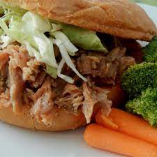

North Carolina Pulled Pork

North Carolina Pulled Pork
I got this from an North Carolina native and it is the best. It is pretty much foolproof. This is made in the slow cooker.
Ingredients
- 2 pounds pork shoulder roast
- salt and ground black pepper to taste
- ½ cup ketchup
- ½ cup brown sugar
- ⅓ cup red wine vinegar
Steps
- Preheat slow cooker on Low for 15 minutes.
- Season pork shoulder with salt and pepper; place pork in preheated slow cooker. Mix ketchup, brown sugar, and vinegar in a bowl; pour over pork.
- Cook on Low for 8 hours. Transfer pork to a large platter and slice into 3 to 4 pieces. Shred meat with 2 forks and return to slow cooker. Continue to cook for 1 hour.